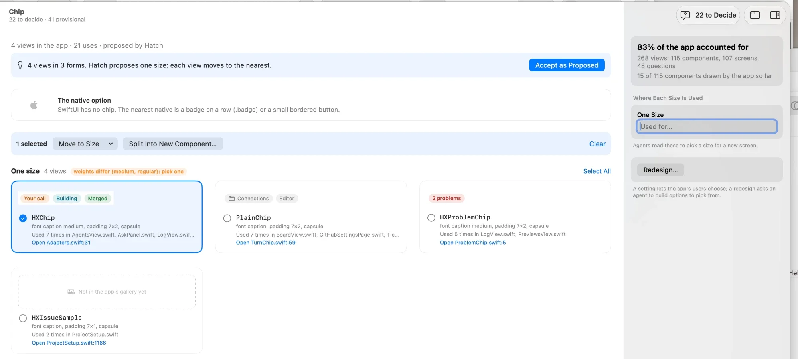

Your Own Components
The page in the Components Designer where you see the components your app made itself, decide what they are, and make them consistent. Today's version showed my internal model instead of answering your questions. This is the page rebuilt from your questions, with your real views and the real screens they sit on.
What is wrong today
Your screenshot, with every problem you named and the ones behind them.

12 34 56 78 910- "Proposes one size." Size is the scanner's word for how it limits variants. It means nothing for chips, and the sentence doesn't say what you're agreeing to.
- The native option as a card of its own, saying SwiftUI has nothing. A card for a non-answer.
- "Move to Size" makes a view part of a group, in words that don't say so.
- White tiles on a white page, which you told me not to do.
- Where it's used is cut off after three file names, on one line, with no screens. That's the opposite of an overview.
- A text field asking where a size is used. Hatch already read that from the code; you shouldn't type it.
- Cards inside the inspector, a field inside a grey box inside a grey card, a button alone in a card.
- "Not in the app's gallery yet." The page is only as good as its pictures, and most were missing.
- The grouping was wrong and the page couldn't show it. HXIssueSample isn't a chip: it's a sample GitHub issue row with labels drawn inside it.
- A stack of boxes before the views: a proposal, a native card and a selection bar, each its own surface, before you see a single view.
What the page is for
You come to it with five questions, in this order. The page answers them top to bottom, in your words, and asks you only what Hatch can't know.
- What did Hatch find? These views look like chips.
- Is Hatch right that they belong together? Here it's three different things that happen to look alike: a status, a tag, and something that isn't a chip at all.
- Where are they used? On which screens, with the screen shown.
- Do they look the same when they should? If not, what differs, and which wins.
- Is it decided? Agree it, or ask for a redesign.
Rules for the page (and for every Hatch page after it)
The page
Drawn with your real views as the app draws them, and the real screens they sit on, from Hatch's demo data. Switch the appearance and the step to see each state.
StatusChip(state:).The pictures are your views, cut from the app's own gallery; the screens are Hatch's real screens with its demo data, the chip outlined where it sits. What each view shows is read from its call sites (the texts passed to it), which Hatch can show as evidence.
What happens after you agree
- The system changes, the code doesn't yet. Status chip is agreed: agents use it for every new state from now on, and the README says so.
- Hatch files one ticket to make the code match: HXChip and HXProblemChip become one view; their eleven uses move to it. You see the ticket in Decide like any other.
- Hatch checks the result, not the agent: after the ticket, the scan must find one Status chip view, and the gallery must draw it the same as before.
- Redesign is a Proposal ticket: an agent builds two or three options as Stage specimens, plus the native one where SwiftUI has one; you pick in the Stage.
Pictures of every component, for any SwiftUI app
The page is only as good as its pictures. Hatch draws them by running the app's own code, never from memory, so every app needs a small gallery: a debug-only file that draws each component with sample values, which Hatch captures. Writing that file is agent work. The question is when.
Hatch can tell from the code how hard each component is to draw, before anything is written. For Hatch itself, 89 components:
Draw your components?
Hatch found 89 components your app made itself. To show them, an agent writes a gallery file in a debug-only part of the app; nothing in it ships.
| Simple values only (text, a colour, a flag) | 55 |
| Need one of your app's values (a status, a ticket type) | 14 |
| Need your app's live state (drawn inside its demo data) | 20 |
| About one agent session |
At setup, after the scan. "Only When I Open One" draws a component the first time you open its page. Either way, every page has Draw It for a view without a picture.
Decisions OC1–OC14
Pick an option per decision (★ is my recommendation), add a note where you want, then Copy Answers at the bottom right and paste them to me.